THINGS-Kids — stimulus review
Every trial, the intended answer, and why
How to read this
Each trial shows three photographs in the order a child sees them. Two are meant to go together; the third is the intended answer.
The intended answer comes from SPoSE, a model fit to 4.7 million adult odd-one-out judgements (Hebart et al., 2023). It is not a ground truth — it is a well-supported prediction about what adults would say, and part of the job of this document is to find the trials where that prediction looks wrong.
Two numbers carry most of the reasoning:
- SPoSE similarity (0–1) between concepts. The pair should be high; the odd item should be low against both.
- CLIP visual margin. Positive means the photographs agree with SPoSE. Negative means they disagree — the intended odd item actually looks like it belongs, and only category knowledge supports the answer. Half of all test trials are deliberately negative.
| difficulty_bin | visual_agree | visual_conflict |
|---|---|---|
| easy | 42 | 42 |
| hard | 42 | 42 |
| medium | 42 | 42 |
| very easy | 42 | 42 |
| very hard | 42 | 42 |
Pilot: where the model and the adult disagreed
| condition | trials | correct | acc |
|---|---|---|---|
| visual_agree | 30 | 33 | 0.83 |
| visual_conflict | 30 | 25 | 0.63 |

Points far below the grey line are the ones to worry about: trials the model calls easy that a fully attentive adult still got wrong. Those are candidates for removal, because a trial no adult endorses cannot measure anything in a child.
| trial_id | condition | pair_a | pair_b | odd_concept | spose_pair | p_correct_spose | clip_margin |
|---|---|---|---|---|---|---|---|
| blk03_09 | visual_conflict | pizza | rice | bamboo | 0.87 | 0.92 | -0.10 |
| blk03_03 | visual_conflict | coleslaw | mango | koala | 0.78 | 0.89 | -0.01 |
| core_08 | visual_conflict | harmonica | trumpet | marker | 0.88 | 0.80 | -0.03 |
| blk03_17 | visual_agree | aquarium | frog | jug | 0.76 | 0.78 | 0.03 |
| blk03_07 | visual_conflict | kayak | submarine | horn | 0.92 | 0.77 | -0.10 |
Core trials
Every child sees these 20, so they carry the age comparison and deserve the closest reading.
core_14 ✓ pilot correct
SUNROOF is the odd one out. SPoSE places chive and pancake at 0.75 (plant), while sunroof (part of car) sits at only 0.09 and 0.12 from them. The model puts an adult’s chance of picking it at 94%. CLIP agrees: the visual margin is +0.084, so appearance points at the same answer.
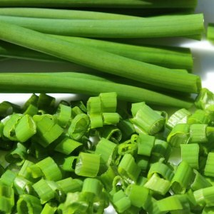
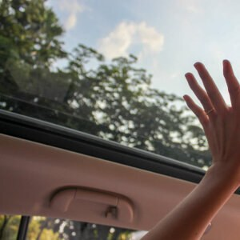
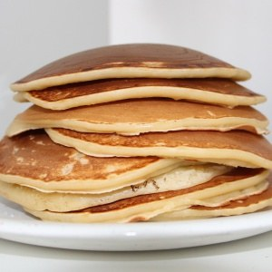
core_19 ✓ pilot correct
CASSETTE is the odd one out. SPoSE places grain and rhubarb at 0.77 (food), while cassette (container) sits at only 0.13 and 0.13 from them. The model puts an adult’s chance of picking it at 94%. CLIP agrees: the visual margin is +0.181, so appearance points at the same answer.
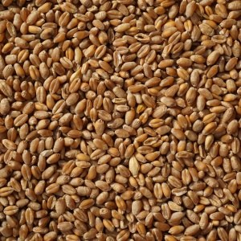
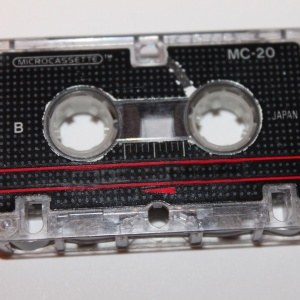
core_04 ✓ pilot correct
SADDLE is the odd one out. SPoSE places goat and hedgehog at 0.93 (animal), while saddle (sports equipment) sits at only 0.47 and 0.35 from them. The model puts an adult’s chance of picking it at 93%. CLIP disagrees: the visual margin is -0.011, so appearance pulls against the intended answer — this is a conflict trial.
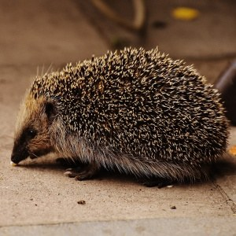
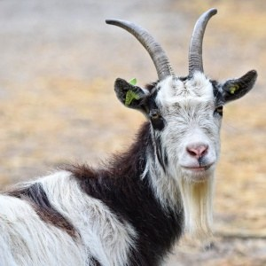
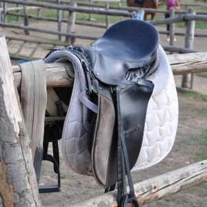
core_09 ✓ pilot correct
EGG is the odd one out. SPoSE places seagull and sloth at 0.90 (animal), while egg (food) sits at only 0.47 and 0.40 from them. The model puts an adult’s chance of picking it at 90%. CLIP disagrees: the visual margin is -0.032, so appearance pulls against the intended answer — this is a conflict trial.
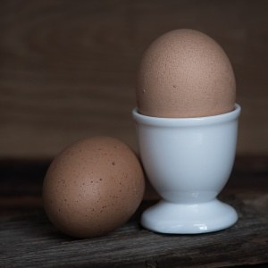
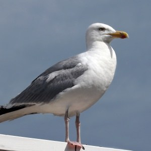
core_13 ✓ pilot correct
VOLLEYBALL is the odd one out. SPoSE places pumpkin and strawberry at 0.89 (food), while volleyball (sports equipment) sits at only 0.55 and 0.26 from them. The model puts an adult’s chance of picking it at 89%. CLIP agrees: the visual margin is +0.127, so appearance points at the same answer.
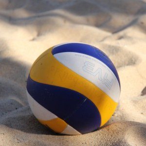
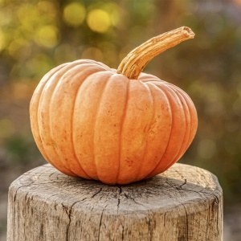
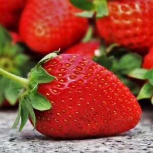
core_03 ✓ pilot correct
HAMMOCK is the odd one out. SPoSE places butter and sorbet at 0.80 (food), while hammock (furniture) sits at only 0.26 and 0.21 from them. The model puts an adult’s chance of picking it at 88%. CLIP disagrees: the visual margin is -0.042, so appearance pulls against the intended answer — this is a conflict trial.
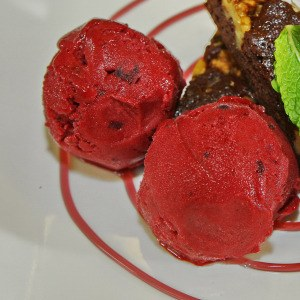
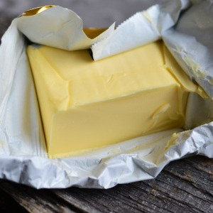
core_18 ✓ pilot correct
SHELF is the odd one out. SPoSE places dishwasher and microwave at 0.95 (electronic device), while shelf (furniture) sits at only 0.66 and 0.70 from them. The model puts an adult’s chance of picking it at 87%. CLIP agrees: the visual margin is +0.042, so appearance points at the same answer.
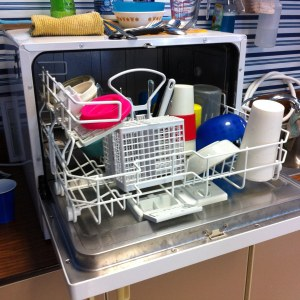
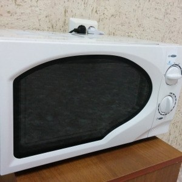
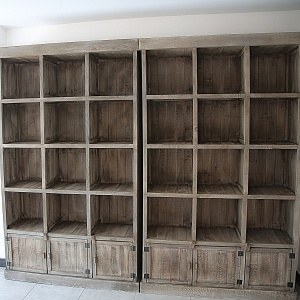
core_08 ✗ missed in pilot
MARKER is the odd one out. SPoSE places harmonica and trumpet at 0.88 (musical instrument), while marker (tool) sits at only 0.55 and 0.56 from them. The model puts an adult’s chance of picking it at 80%. CLIP disagrees: the visual margin is -0.025, so appearance pulls against the intended answer — this is a conflict trial.
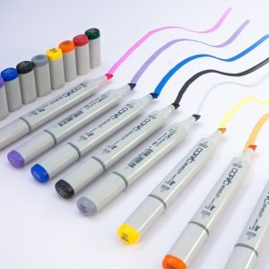
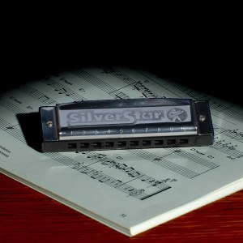
core_02 ✓ pilot correct
GARLIC is the odd one out. SPoSE places bee and sunflower at 0.87 (animal), while garlic (food) sits at only 0.42 and 0.63 from them. The model puts an adult’s chance of picking it at 80%. CLIP disagrees: the visual margin is -0.045, so appearance pulls against the intended answer — this is a conflict trial.
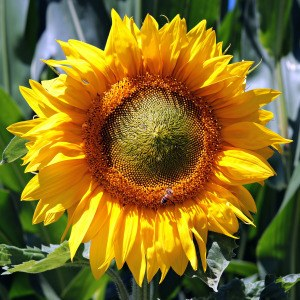
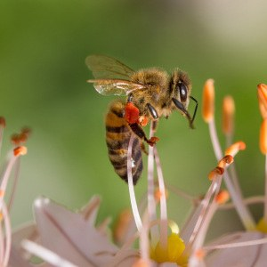
core_07 ✓ pilot correct
ORCHID is the odd one out. SPoSE places monkey and swan at 0.84 (animal), while orchid (plant) sits at only 0.37 and 0.51 from them. The model puts an adult’s chance of picking it at 80%. CLIP disagrees: the visual margin is -0.112, so appearance pulls against the intended answer — this is a conflict trial.
core_17 ✓ pilot correct
BED is the odd one out. SPoSE places caramel and oatmeal at 0.73 (food), while bed (furniture) sits at only 0.34 and 0.14 from them. The model puts an adult’s chance of picking it at 78%. CLIP agrees: the visual margin is +0.070, so appearance points at the same answer.
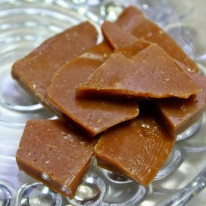
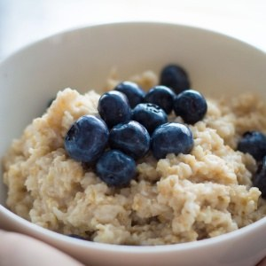
core_12 ✓ pilot correct
GARGOYLE is the odd one out. SPoSE places hippopotamus and turkey at 0.89 (animal), while gargoyle (decoration) sits at only 0.57 and 0.58 from them. The model puts an adult’s chance of picking it at 76%. CLIP agrees: the visual margin is +0.046, so appearance points at the same answer.
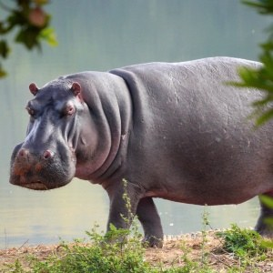
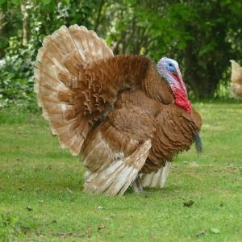
core_16 ✓ pilot correct
DRAGONFLY is the odd one out. SPoSE places basil and potato at 0.82 (plant), while dragonfly (animal) sits at only 0.74 and 0.37 from them. The model puts an adult’s chance of picking it at 69%. CLIP agrees: the visual margin is +0.104, so appearance points at the same answer.
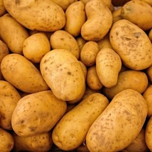
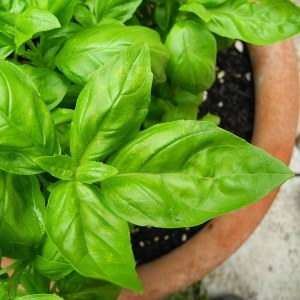
core_01 ✓ pilot correct
CACTUS is the odd one out. SPoSE places avocado and zucchini at 0.80 (food), while cactus (plant) sits at only 0.46 and 0.61 from them. The model puts an adult’s chance of picking it at 68%. CLIP disagrees: the visual margin is -0.012, so appearance pulls against the intended answer — this is a conflict trial.
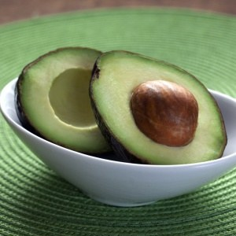
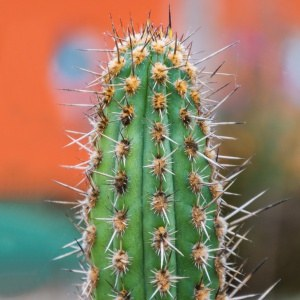
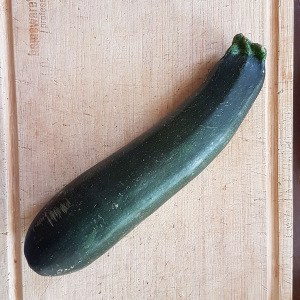
core_11 ✓ pilot correct
BOUQUET is the odd one out. SPoSE places papaya and pesto at 0.84 (food), while bouquet (decoration) sits at only 0.75 and 0.56 from them. The model puts an adult’s chance of picking it at 63%. CLIP agrees: the visual margin is +0.100, so appearance points at the same answer.
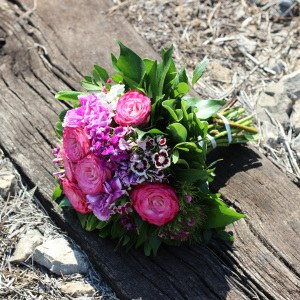
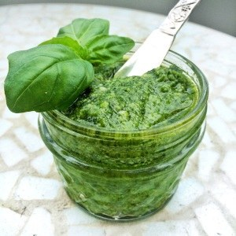
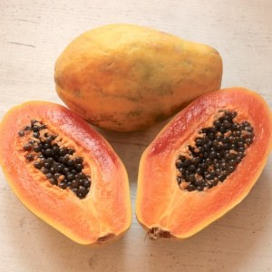
core_06 ✓ pilot correct
POT is the odd one out. SPoSE places gazelle and lobster at 0.71 (animal), while pot (container) sits at only 0.09 and 0.48 from them. The model puts an adult’s chance of picking it at 59%. CLIP disagrees: the visual margin is -0.031, so appearance pulls against the intended answer — this is a conflict trial.
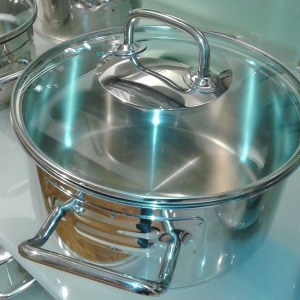
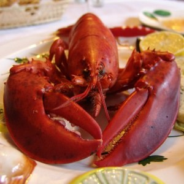
core_00 ✗ missed in pilot
BASEBALL is the odd one out. SPoSE places headdress and visor at 0.71 (clothing), while baseball (sports equipment) sits at only 0.44 and 0.63 from them. The model puts an adult’s chance of picking it at 52%. CLIP disagrees: the visual margin is -0.010, so appearance pulls against the intended answer — this is a conflict trial.
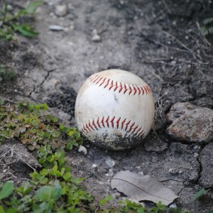
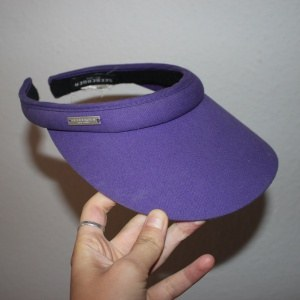
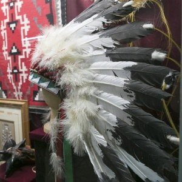
core_05 ✗ missed in pilot
CLAM is the odd one out. SPoSE places coconut and parsley at 0.79 (food), while clam (animal) sits at only 0.76 and 0.60 from them. The model puts an adult’s chance of picking it at 49%. CLIP disagrees: the visual margin is -0.035, so appearance pulls against the intended answer — this is a conflict trial.
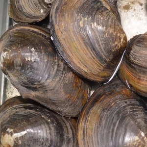
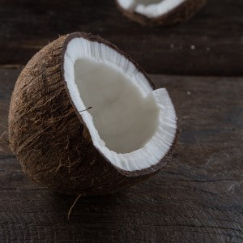
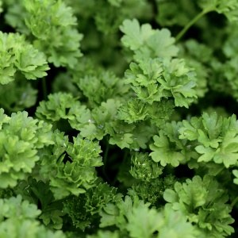
core_10 ✓ pilot correct
DISH is the odd one out. SPoSE places raisin and salami at 0.76 (food), while dish (container) sits at only 0.56 and 0.58 from them. The model puts an adult’s chance of picking it at 48%. CLIP agrees: the visual margin is +0.110, so appearance points at the same answer.
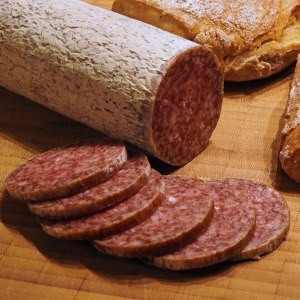
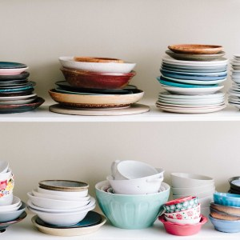
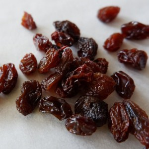
core_15 ✗ missed in pilot
BAGPIPE is the odd one out. SPoSE places suit and toe at 0.72 (clothing), while bagpipe (musical instrument) sits at only 0.60 and 0.29 from them. The model puts an adult’s chance of picking it at 48%. CLIP agrees: the visual margin is +0.042, so appearance points at the same answer.
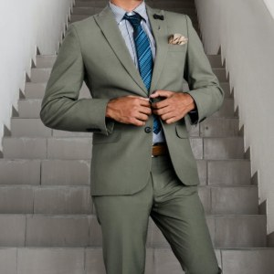
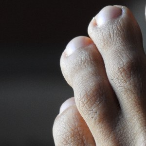
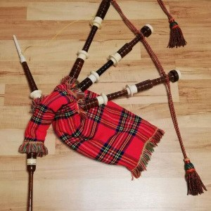
Training, warmup, and attention checks
training_00 ✓ pilot correct
CLIPBOARD is the odd one out. SPoSE places pigeon and turtle at 0.92 (animal), while clipboard (office supply) sits at only 0.10 and 0.11 from them. The model puts an adult’s chance of picking it at 99%. CLIP agrees: the visual margin is +0.109, so appearance points at the same answer.
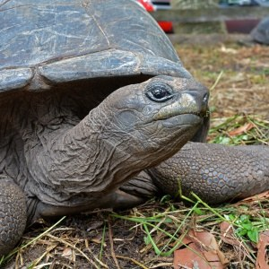
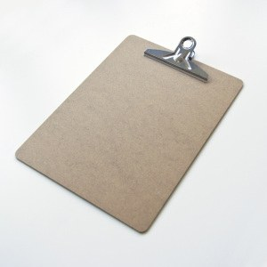
training_01 ✓ pilot correct
AMPLIFIER is the odd one out. SPoSE places flower and pineapple at 0.84 (plant), while amplifier (electronic device) sits at only 0.10 and 0.08 from them. The model puts an adult’s chance of picking it at 97%. CLIP agrees: the visual margin is +0.109, so appearance points at the same answer.
training_02 ✓ pilot correct
DESSERT is the odd one out. SPoSE places crate and forklift at 0.89 (container), while dessert (food) sits at only 0.10 and 0.09 from them. The model puts an adult’s chance of picking it at 99%. CLIP agrees: the visual margin is +0.042, so appearance points at the same answer.
training_03 ✓ pilot correct
BRAKE is the odd one out. SPoSE places fondue and marshmallow at 0.84 (food), while brake (part of car) sits at only 0.13 and 0.09 from them. The model puts an adult’s chance of picking it at 97%. CLIP agrees: the visual margin is +0.167, so appearance points at the same answer.
warmup_00 ✓ pilot correct
POSTER is the odd one out. SPoSE places almond and sauerkraut at 0.78 (food), while poster (home decor) sits at only 0.15 and 0.11 from them. The model puts an adult’s chance of picking it at 95%. CLIP agrees: the visual margin is +0.165, so appearance points at the same answer.
warmup_01 ✓ pilot correct
CARDIGAN is the odd one out. SPoSE places carrot and fruitcake at 0.82 (food), while cardigan (clothing) sits at only 0.23 and 0.18 from them. The model puts an adult’s chance of picking it at 93%. CLIP agrees: the visual margin is +0.046, so appearance points at the same answer.
warmup_02 ✓ pilot correct
SWEATER is the odd one out. SPoSE places jellyfish and snail at 0.84 (animal), while sweater (clothing) sits at only 0.22 and 0.13 from them. The model puts an adult’s chance of picking it at 94%. CLIP agrees: the visual margin is +0.072, so appearance points at the same answer.
warmup_03 ✓ pilot correct
SUBWAY is the odd one out. SPoSE places artichoke and tamale at 0.74 (plant), while subway (vehicle) sits at only 0.09 and 0.13 from them. The model puts an adult’s chance of picking it at 94%. CLIP agrees: the visual margin is +0.264, so appearance points at the same answer.
catch_00 ✓ pilot correct
Attention check. Two copies of the same photo (boat) plus cymbal. The duplicate is the point — anyone attending cannot miss it.
catch_01 ✓ pilot correct
Attention check. Two copies of the same photo (teacup) plus swordfish. The duplicate is the point — anyone attending cannot miss it.
catch_02 ✓ pilot correct
Attention check. Two copies of the same photo (cheese) plus leggings. The duplicate is the point — anyone attending cannot miss it.
Rotating bank
The 400 rotating bank trials are omitted here to keep the document readable. Each child sees one 20-trial block of the 20 currently active.
Render the full set with:
rmarkdown::render("stimulus_review.Rmd", params = list(scope = "all"))Provenance
All photographs come from the vocab-gradient published item set
(THINGS, copyright-free release), restricted to concepts appearing in
test_items.csv so results join to that paper’s 4AFC item
data. Similarity terms are recomputed by
build_reasoning_table.py from the same matrices the bank
was built with: SPoSE 66-d (Hebart et al., 2023) and CLIP ViT-B/32 with
OpenAI weights, matching the model the vocab-gradient paper used.
No image appears twice within a session, and no two concepts in different trials of one session exceed CLIP .88 — near-identical photographs of different concepts read as repeats even when nothing is literally repeated.